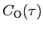

Next:
The correlation time of
Up:
Spherical diffusion tensor
Previous:
The weight gradient of
Contents
Index
Subsections
-
partial derivative
The weight Hessian of the sphere
-
partial derivative
The second partial derivatives with respect to the geometric parameter
twice is

(theparentequation.
168
)
Next:
The correlation time of
Up:
Spherical diffusion tensor
Previous:
The weight gradient of
Contents
Index
Edward d'Auvergne 2010-12-31